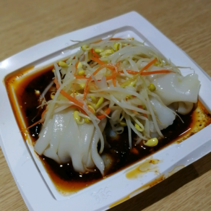
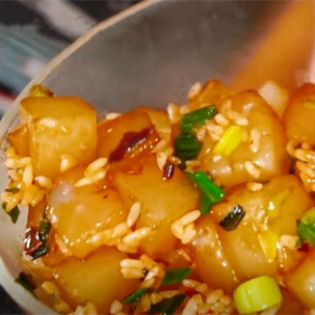
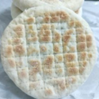
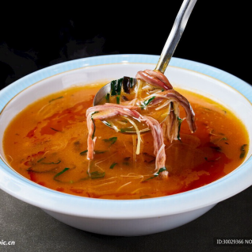
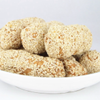

秦镇米皮
秦镇米皮是陕西户县秦渡镇的传统名吃，也是西安街头最具代表性的 “陕味” 小吃之一。它以 “白、薄、光、软、筋、香” 著称，口感细腻爽滑、酸辣开胃，常与肉夹馍、冰峰汽水并称 “三秦套餐”，是本地人日常解馋、外地游客来陕必尝的经典味道。
秦镇米皮的灵魂在于 “米” 和 “蒸”。选用优质籼米，经浸泡、磨浆、过滤，调成细腻米浆，再用特制蒸屉或蒸锅薄浇成皮，蒸至半透明、柔韧不断。米皮质地洁白细腻、薄而筋道，入口顺滑却不软烂，带着淡淡的米香。切条后拌上红油辣子、香醋、蒜泥、盐水和调料水，酸辣鲜香、清爽不腻，红油提香却不燥，醋香开胃又解腻，越吃越上头。
一碗地道的秦镇米皮，色泽红亮、香辣适中，既有米浆蒸制的软糯，又有红油辣子的醇厚，简单却极具层次。它承载着关中平原的物产特色与市井烟火，是陕西人对 “酸辣爽口” 的极致诠释，也是西安街头最让人念念不忘的味道之一。
西安美食鉴赏
豆腐脑

炒凉粉

芝麻盐馍

酸辣肚丝汤
黑米凉糕

三原蓼花糖